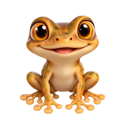
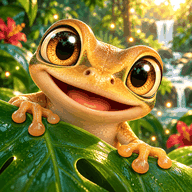

Un coquí por fila, columna y color
Respira. Tu próximo coquí te espera.

0 victorias
Tres rincones. La misma tranquilidad.
Audio del coquí proporcionado por ti. Se reproduce sin recortarlo ni modificarlo.
Tu estilo y tu partida se guardan en este dispositivo. En iPhone: Compartir → Añadir a pantalla de inicio.
Coquídoku · v1.9.0
Encuentra los 8 coquíes con estas cuatro reglas:
Toca Colocar coquí para cambiar a Marcar X y descartar casillas. Toca una marca de nuevo para quitarla.
Al terminar cada tablero aparece un minijuego: supéralo para ganar 20 puntos y comprar coquíes. Los niveles dan semillas para El Yunque, sin puntos. Tienes 3 pistas por tablero. En Preferencias puedes jugar sin límite de errores.

Encontraste los ocho. Qué bonito se siente resolverlo.
Elige quién te acompaña en el tablero.
Completa niveles distintos o usa puntos ganados exclusivamente en los minijuegos. Los retos diarios hacen crecer El Yunque. Boricua solo se desbloquea al completar los 60 niveles de la aventura; no se compra. Los amigos que ya tenías se conservan. Son personajes de fantasía; su apariencia no cambia las reglas.
Arrastra los coquíes para moverlos. Toca Alimentar para repartir insectos.
Alimentaciones: 0. El alimento es gratuito y no da puntos ni cambia las reglas del juego.
Una semilla por nivel distinto o reto diario nuevo. Tu bosque no se marchita. Cada coquí explora con un brinco cada 15 segundos, salvo si descansa o activas Reducir animaciones.
El audio del coquí que nos compartiste.
Solo se usan puntos ganados en minijuegos. Sin dinero real.
Cada minijuego superado da 20 puntos una sola vez. Puedes volver a intentarlo sin perder vidas. Si lo cierras, puedes retomarlo desde Minijuego pendiente. Sin reloj y sin perder vidas.
Preparando tu rincón…